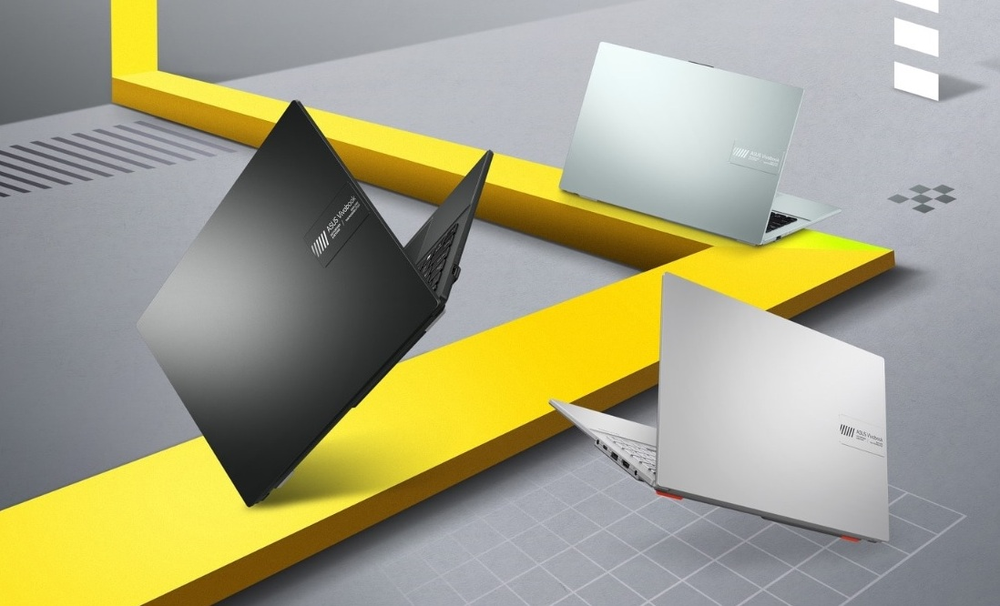
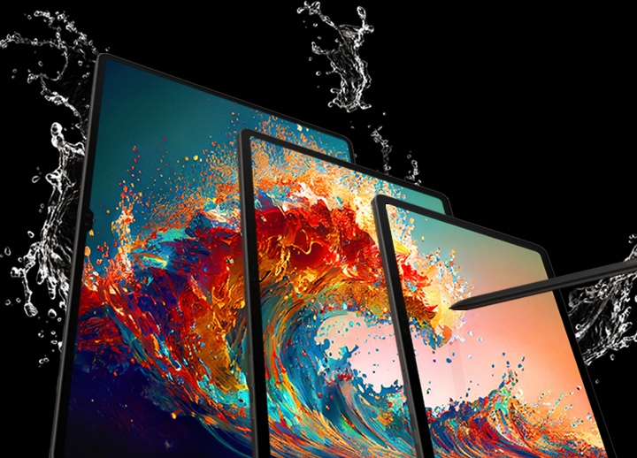

Новости
iPhone 17 Pro

Встречайте iPhone 17. Благодаря сглаженным краям, более тонким рамкам и прочным материалам, таким как Ceramic Shield 2 на передней панели, он выглядит великолепным. Вы сможете увидеть и сделать больше всего, что вам нравится, на 6,3 -дюймовом дисплее Super Retina XDR. Наслаждайтесь более плавной прокруткой и более захватывающим игровым процессом благодаря ProMotion с адаптивной частотой обновления до 120 Гц. iPhone 17 оснащён 48-мегапиксельной основной камерой Fusion с 2-кратным оптическим телеобъективом и 48-мегапиксельной сверхширокоугольной камерой Fusion с разрешением в 4 раза больше, чем у сверхширокоугольной камеры iPhone 16. Теперь сверхширокоугольные фотографии по умолчанию имеют разрешение 24 МП — идеальный размер файла для хранения и публикации в высоком качестве. Вы получите потрясающие снимки сверхвысокого разрешения — как вблизи, так и издалека, в помещении и на улице, в условиях как яркого, так и слабого освещения. Процессор A19 обеспечивает работу всех функций iPhone , включая функции Apple Intelligence, такие как Live Translation и Image Playground, а также ProMotion для продвинутых игр класса AAA. Благодаря аккумулятору, обеспечивающему целый день работы , вы можете работать, смотреть фильмы и гулять без каких-либо забот. Если вам нужно быстро подзарядить аккумулятор, всего 10 минут зарядки обеспечат до 8 часов просмотра видео при использовании адаптера высокой мощности.
ASUS Vivobook 16
ASUS Vivobook 16 X1605VA — это универсальный ноутбук, предназначенный для профессионалов и любителей технологий. Он обеспечивает высокую производительность и мобильность, что делает его идеальным для использования в офисе и вне его. Этот ноутбук также оснащен качественным дисплеем и удобной клавиатурой, что создает комфортные условия для работы и развлечений.
Samsung Galaxy Tab S9
Планшет Samsung Galaxy Tab S9 Wi-Fi 256 ГБ обеспечивает высокую производительность и широкие возможности для разных задач, которые связаны с работой, творчеством и проведением досуга. Он изготовлен в прочном металлическом корпусе толщиной 5.9 мм с алюминиевой рамкой, которая помогает сохранять целостность при ударах и падениях. Конструкция защищена от попадания пыли и влаги по стандарту IP68. Быстродействие системы обеспечивается процессором Qualcomm Snapdragon 8 Gen 2 и 12 ГБ оперативной памяти. В Samsung Galaxy Tab S9 установлен экран 11 дюймов Dynamic AMOLED 2X с разрешением 2560x1660 пикселей. С любого положения и при разном уровне внешнего освещения на нем передается реалистичная картинка. Магнитное электронное перо с высокой точностью создает заметки и позволяет рисовать. Для соединения с Интернетом в планшете есть встроенный модуль Wi-Fi. Четыре динамика от AKG с технологией пространственного звука Dolby Atmos позволяют погрузиться в просмотр фильмов и другого контента.
Samsung Galaxy S24 Ultra

Смартфон Samsung Galaxy S24 Ultra поставляется в титановом корпусе серого цвета с классом защиты IP68. Такой стандарт указывает на высокую устойчивость оболочки к влаге, вода не проникнет внутрь даже при прямом контакте. Экран закрыт стеклом Corning Gorilla Armor с высокой защитой от царапин и истирания. Смартфон Samsung Galaxy S24 Ultra получил экран диагональю 6.8 дюйма с разрешением 3120x1440 точек, 16 млн цветов и поддержкой матрицы Dynamic AMOLED 2X. Такой набор технологий обеспечивает воспроизведение четкой, яркой картинки, глубокие черные цвета и насыщенные оттенки. Частота обновления кадров 120 Гц обеспечивает плавную и отзывчивую работу интерфейса. Оперативная память 12 ГБ обеспечивает быстродействие работы смартфона – приложения и вкладки в браузере загружаются без задержек. Предусмотрено 4 тыловых камер, основной объектив способен снимать фото с разрешением 200 Мп и приближать сильно удаленные объекты без потери четкости с помощью 100-кратного зума. Аккумулятор емкостью 5000 мАч обеспечивает работу без подзарядки в течение 95 часов в режиме прослушивания музыки.